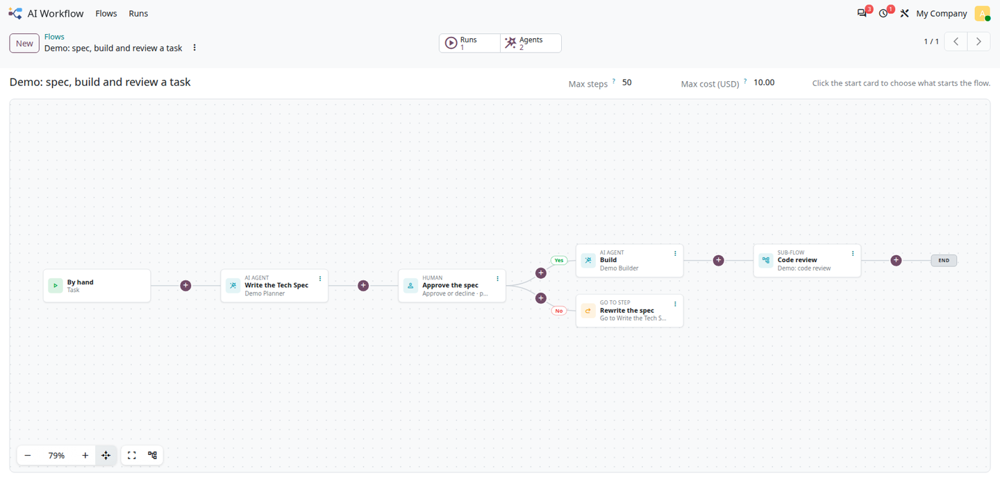

Web Flow draws a tree of steps with branches on a canvas, like the campaigns of a marketing automation, for any model of your modules, on Odoo Community and Enterprise. Users add a step where it goes with the + buttons, edit it in place, move it, zoom and pan.
web.flow.mixin for the flow, web.flow.node.mixin for its steps,
with the tree rules built in.
widget="web_flow" on the one2many of the steps: cards, curved connectors,
branch labels, END of the branches.
The canvas as used by AI Workflow: steps of different types, Yes / No branches, + buttons.

web.flow.mixin; its steps inherit web.flow.node.mixin,
with a many2one to the flow (_flow_container_field, flow_id by default),
a parent_id to the previous step and a type field (_flow_type_field,
node_type by default)._flow_node_types() (the types offered by the + buttons, with icon,
help and category), _flow_branch_list() (the branches under a step) and optionally
_flow_card_data() (summary and warning of the card).widget="web_flow" on the one2many of the steps.class MyFlowStep(models.Model):
_name = 'my.flow.step'
_inherit = ['web.flow.node.mixin']
flow_id = fields.Many2one('my.flow', required=True, ondelete='cascade')
parent_id = fields.Many2one('my.flow.step', ondelete='cascade')
node_type = fields.Selection([('task', 'Task'), ('check', 'Check')], required=True)
@api.model
def _flow_node_types(self):
return [{'type': 'task', 'label': 'Task', 'icon': 'checklist', 'help': 'Do something',
'category': 'Work', 'shape': 'card'},
{'type': 'check', 'label': 'Check', 'icon': 'fork_right', 'help': 'Yes or No',
'category': 'Rules', 'shape': 'card'}]
def _flow_branch_list(self):
return [('yes', False), ('no', False)] if self.node_type == 'check' else [('next', False)]fill to use the height left
in the page.A view type flow for any model: the records as the cards of a kanban view, from left to
right in horizontal lanes by the group by (split in sub-lanes by a second group by), with the
connectors of the links between them.
<flow default_group_by="stage_id" type_field="flow_type_id" card_id="...">
<link field="depend_on_ids" string="Blocked by"/>
<link field="parent_id" string="Sub-task" line="dashed" arrow="0" route="orthogonal"/>
</flow>direction="next"); line solid, dashed or dotted, arrow, color,
curved or orthogonal connectors.type_field, grouped
by category, with icons) between the two records.web only. LGPL-3, free.